Amazon Connect 인스턴스를 생성합니다. Amazon Connect 인스턴스란, 클라우드 콜센터 인프라 하나를 가르키는 단위입니다. 인스턴스 내부에는 콜센터를 위한 모든 인프라가 클라우드 기반으로 설치됩니다. 별도의 하드웨어 인프라를 설치할 필요 없이 인스턴스를 생성하면 모든 콜센터 관련 클라우드 인프라 및 통신사와의 연결 또한 자동 생성/관리 됩니다. 사용자는 인프라 설치 및 관리를 직접하지 않아도 됩니다.
AWS 콘솔 화면에서 먼저 아래 화면에서 오른쪽 위 빨간색 박스 부분에서 현재 콘솔의 리전을 확인합니다. 이 실습에서는 US EAST (N. Virginia) us-east-1 또는 US West (Oregon) us-west-2 에서 진행합니다. 현재 리전이 다른 곳으로 설정된 경우 2가지 중 하나의 리전으로 변경하시기 바랍니다. 리전 설정 이후 왼쪽 위 Services 메뉴를 클릭합니다.
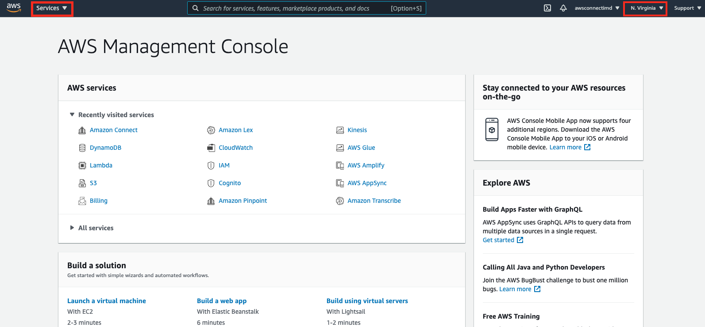
리전을 Ohio 나 N.California 를 선택하지 않도록 주의합니다. Virginia와 Oregon 리전에서는 전화번호 발급이 상대적으로 타 리전에 비해 간편하기 때문에, 본 실습에서는 이 두 리전 중 하나의 리전으로 진행합니다. (타 리전에서는 해당 국가의 법령/규제 이슈로 별도 프로세스 존재)
Services 메뉴에서 Amazon Connect 를 선택합니다. 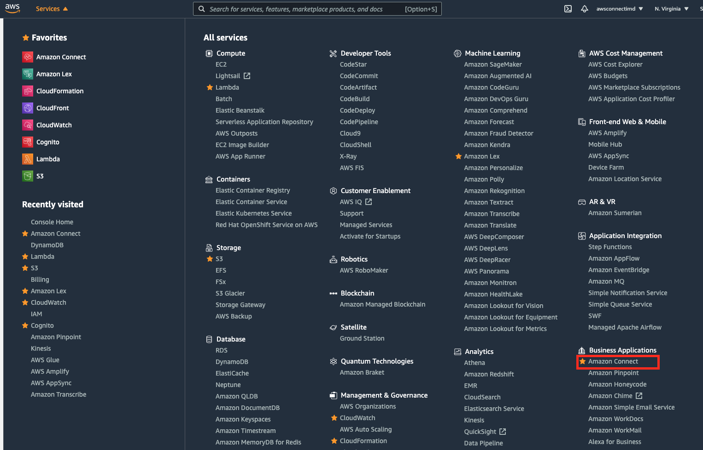
Amazon Connect 서비스 첫 시작 화면입니다. Get Started 버튼을 클릭하여 진행합니다. 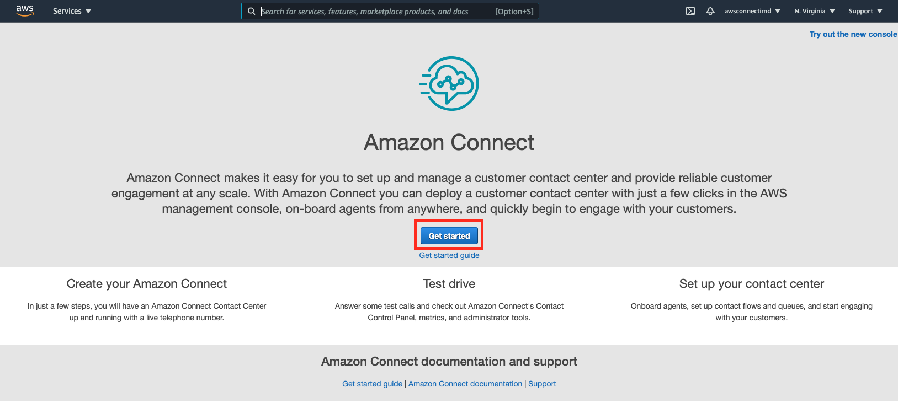
만약, 아래와 같은 UI 화면이 나오면 오른쪽 위의 Try out the new console 버튼을 클릭하여 신규 UI로 전환합니다. 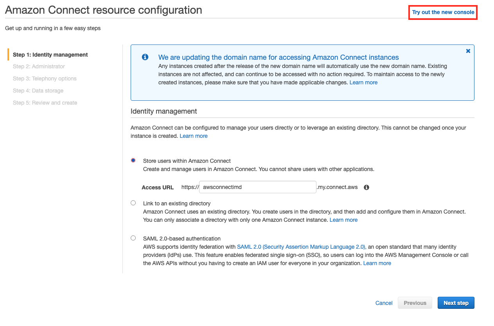
Specify an administrator 를 선택하고, 아래 화면에 Administrator 정보를 입력합니다. Connect 인스턴스의 관리자를 설정하는 화면입니다. 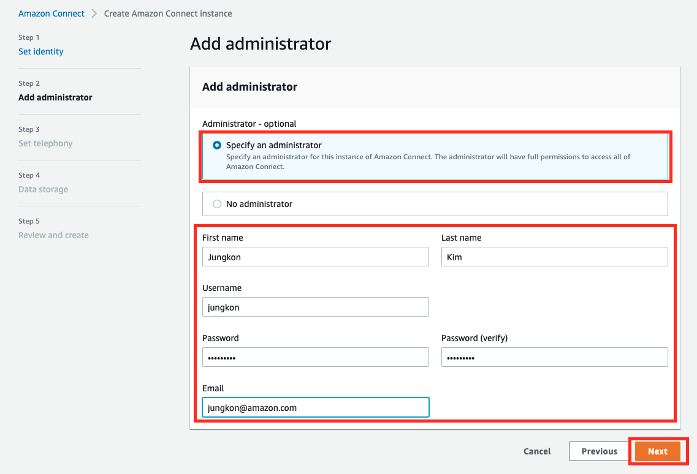
Connect 에서는 3가지 계정 관리 방법을 지원합니다. 1. Connect 내부에서 계정 정보 관리, 2. 기존 Active Directory 서비스로 연결, 3. SAML 연동입니다. 본 워크샵에서는 빠른 진행을 위해 Connect 내부에서 계정 정보를 저장하도록 합니다. 기타 자세한 내용은 Amazon Connect 에서 자격 증명 관리 계획 을 참고하시기 바랍니다.
Incoming Call / Outgoing Call 을 모두 관리할 수 있도록 기존 설정 그대로 진행합니다. Next 버튼을 클릭합니다. 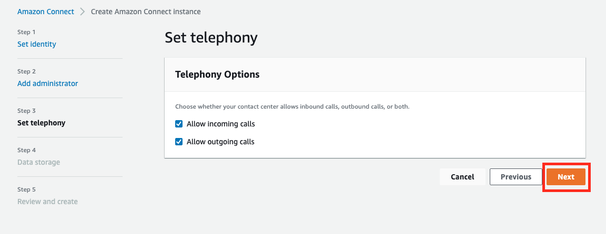
녹취, 리포트, 채팅 기록 등은 클라우드 스토리지인 S3에 저장이 됩니다. 저장 위치를 변경할 수 있습니다만, 기존 설정 그대로 진행합니다. Next 버튼을 클릭합니다. 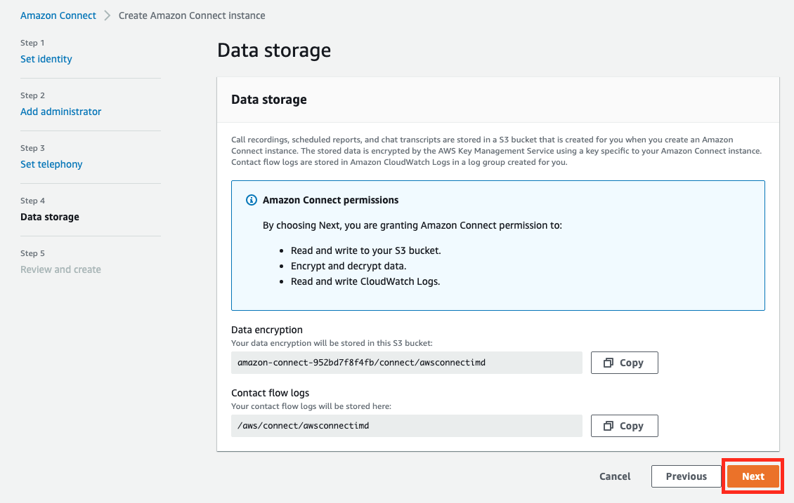
인스턴스 생성을 위한 모든 설정을 완료했습니다. 지금까지 입력한 내용이 잘 입력되었는지 확인 후 Create Instance 버튼을 클릭하여 진행합니다. 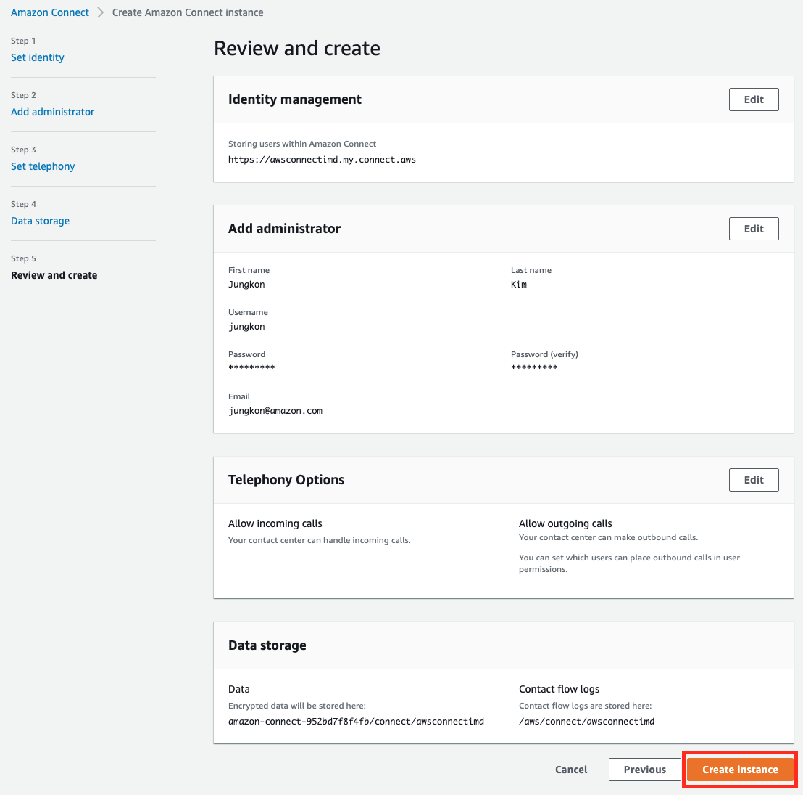
수분 이후 인스턴스 생성이 완료됩니다. 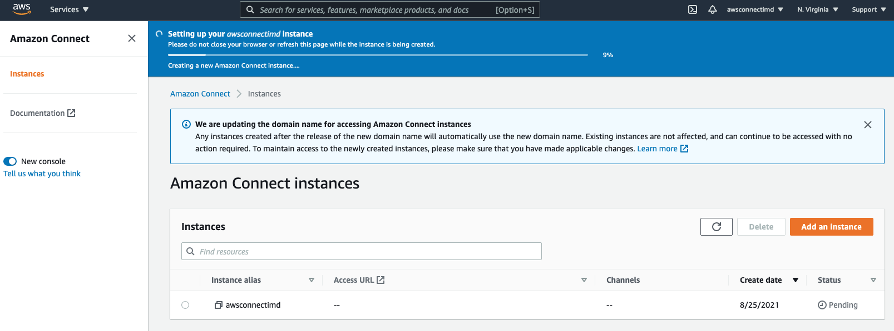
인스턴스 생성이 완료됐습니다. 아래 화면에서 상단 메시지와 오른쪽 아래 Status 가 Active 로 되어 있으면 생성이 성공한 것입니다. 이제 왼쪽 하단의 Instance Alias 를 클릭합니다. 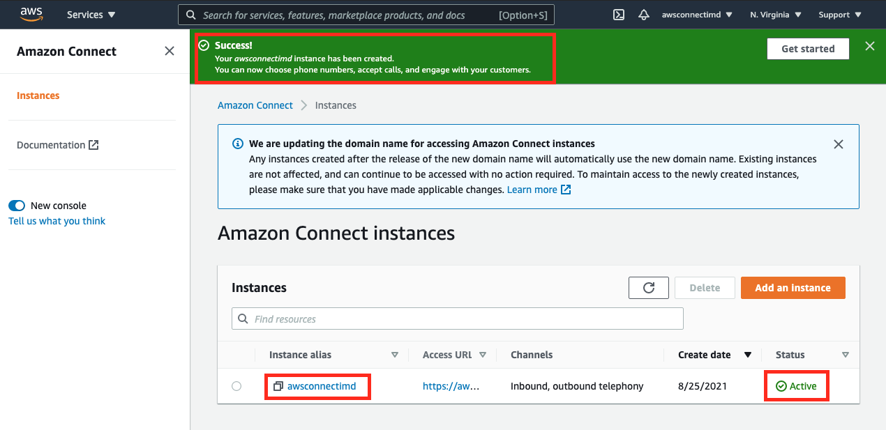
아래 화면의 Access URL 을 기록해둡니다. 앞으로는 AWS 콘솔을 접속하지 않고도 이 URL을 이용하여 Connect 콘솔을 접속할 수 있습니다. 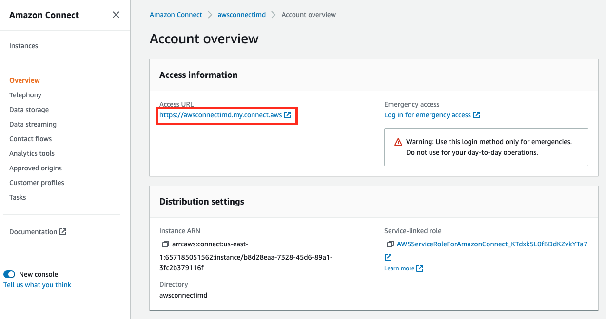
콘솔은 AWS 콘솔과 Connect 콘솔로 구분할 수 있습니다. Connect 와 같이 연동하여 사용할 수 있는 AWS 서비스들(Lambda, Kinesis, Lex 등)은 AWS 콘솔에서 설정합니다. 그외 콜센터 관련 설정 (IVR 시나리오, 상담원 계정, 관리자 계정, 라우팅 규칙 등)은 Connect 콘솔에서 설정합니다.
인스턴스 생성 과정 중 5번에서 입력했던 관리자 계정 정보를 입력합니다. 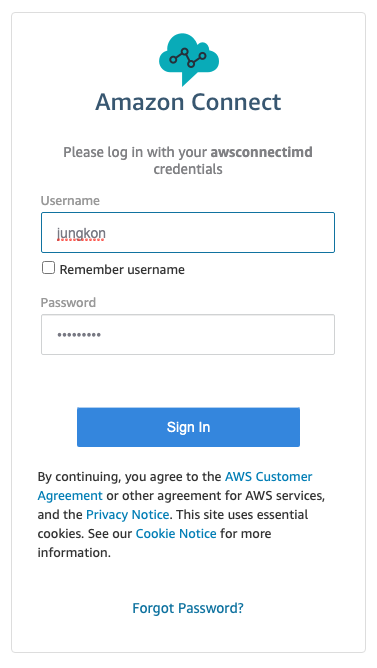
로그인을 한 이후 아래와 같은 Connect 콘솔을 확인할 수 있습니다. 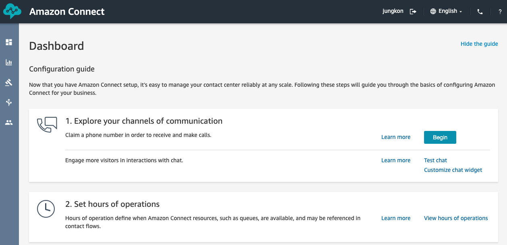